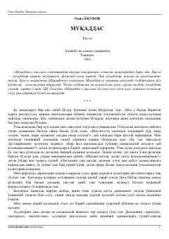

MXudbinlik va halolsizlik muhabbatni qanday o'ldirishi haqida fojiaviy qissa.
Odil Yoqubovning 'Muqaddas' qissasi 1963-yilda nashr etilgan bo'lib, yigit Sharifjon va qiz Muqaddas o'rtasidagi fojiaviy muhabbat haqida hikoya qiladi. Asarda chin muhabbat, poklik va halollikning ramzi sifatida Muqaddas obrazi yaratilgan, xudbinlik esa sevgini so'ndiruvchi kuch sifatida tasvirlanadi. Qissa oltmishinchi yillar yoshlari orasida sevimli asar bo'lib, bugungi kunda ham ibratli hisoblanadi.